『Kingshot』豊穣祝典／豊穣の主 完全攻略ガイド
日本語実機で全7フェーズの獲得ポイント・目標報酬・順位報酬を完全実測し、日本人プレイヤー向けに分かりやすく再構成した決定版ガイドです。KvK資材を無傷で温存しつつ、全目標報酬・無課金でも毎日+500pt稼げる同盟食材シャッフル裏技・サブイベント終了日ズレ対策までこれ1本で完結します。
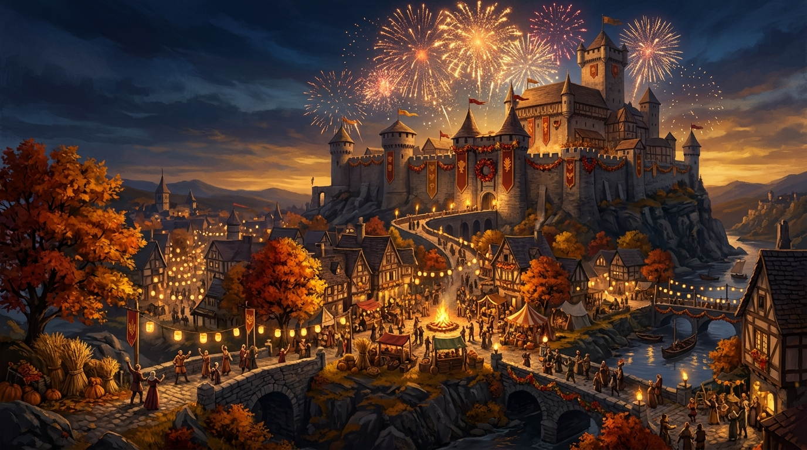
最重要結論 ＆ 絶対回避すべき5大罠
豊穣祝典（Thanksgiving / Harvest Celebration）は複数のイベントが同時並行する大型祝祭ですが、仕様を知らずに動くとKvK用の重要資材や料理ポイントを大量に損失します。開始直後に必ず押さえるべき5つのポイントは以下の通りです。
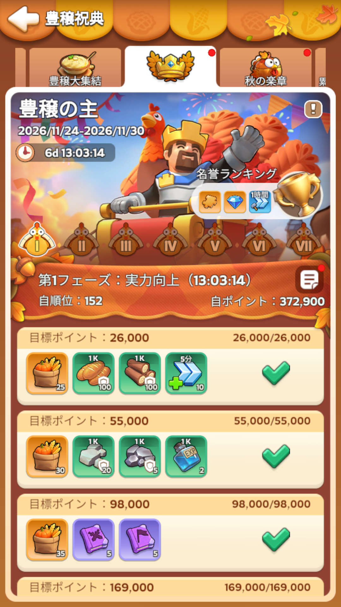
BS01 実機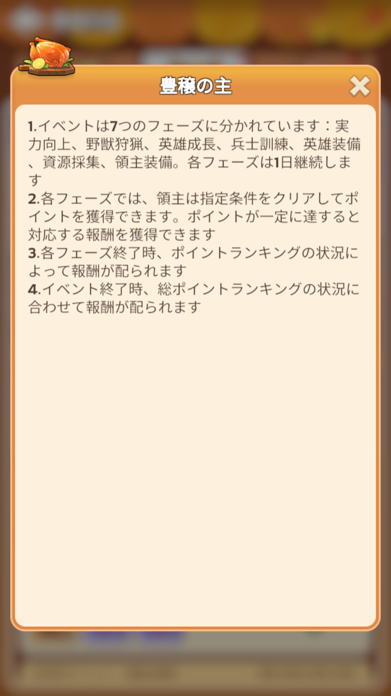
BS02 実機「豊穣の主」全7フェーズ実測データ ＆ 攻略タブ
日本語実機で全7フェーズのポイント獲得条件を完全実測しました。下のタブから各日の実測テーブル・日本語実画面スクショ・KvK温存ムーブを切り替えられます。画像はすべてクリックで拡大表示できます。
| 獲得アクション | ポイント | 備考・効率 |
|---|---|---|
| 建造・研究・訓練／昇格で総力 +1 | 1 pt | 純金（Truegold）・チャーム等は対象外 |
| エピック募集 ×1 | 11,000 pt | Day3と鍵を分割して温存 |
| 上級募集 ×1 | 3,300 pt | 無料分＋手持ち鍵で目標調整 |
| レア英雄の欠片 ×1 | 500 pt | 余剰欠片で微調整に有効 |
| エピック英雄の欠片 ×1 | 2,200 pt | 同上 |
| レジェンド英雄の欠片 ×1 | 6,000 pt | KvK温存推奨 |
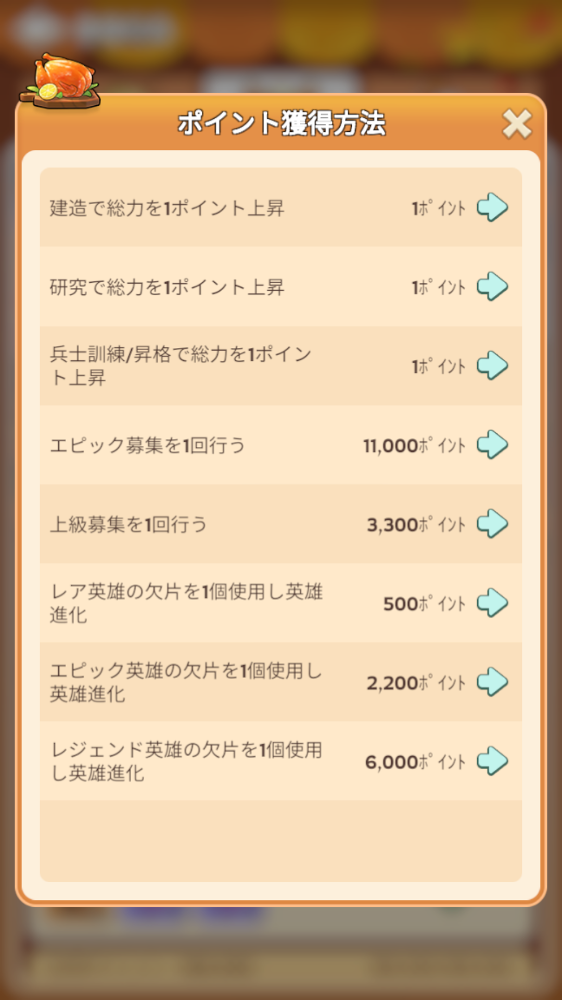
BS03 Day1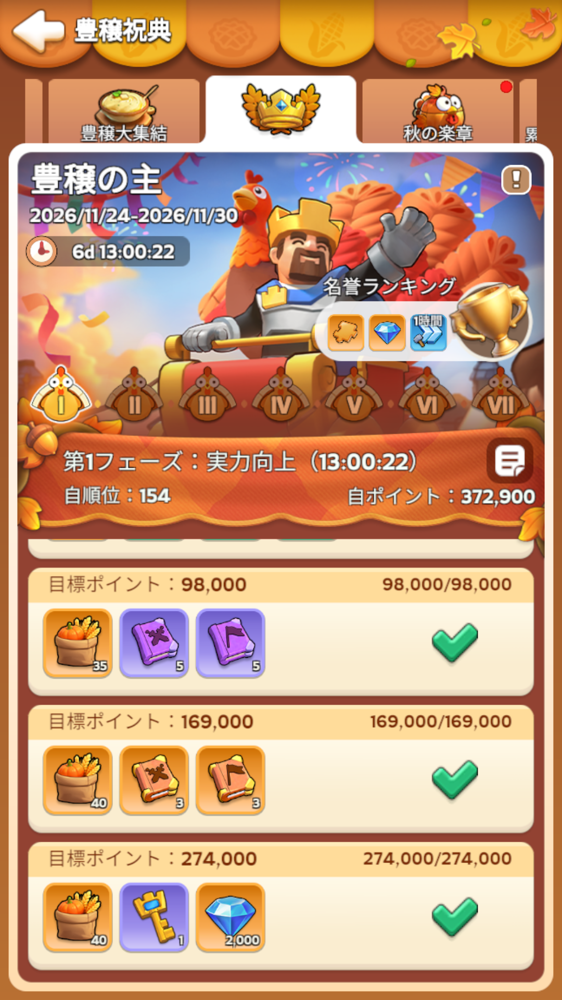
BS04 目標報酬| 獲得アクション | ポイント | スタミナ効率（実測計算） |
|---|---|---|
| 集結発起で巨獣討伐（25スタミナ） | 30,000 pt | 1,200 pt / スタミナ |
| Lv.1〜30 野獣討伐（通常10スタミナ） | 9,900 pt | 990 pt / スタミナ |
| Lv.1〜30 野獣討伐（軽減英雄 8スタミナ） | 9,900 pt | 1,237.5 pt / スタミナ（最高効率） |
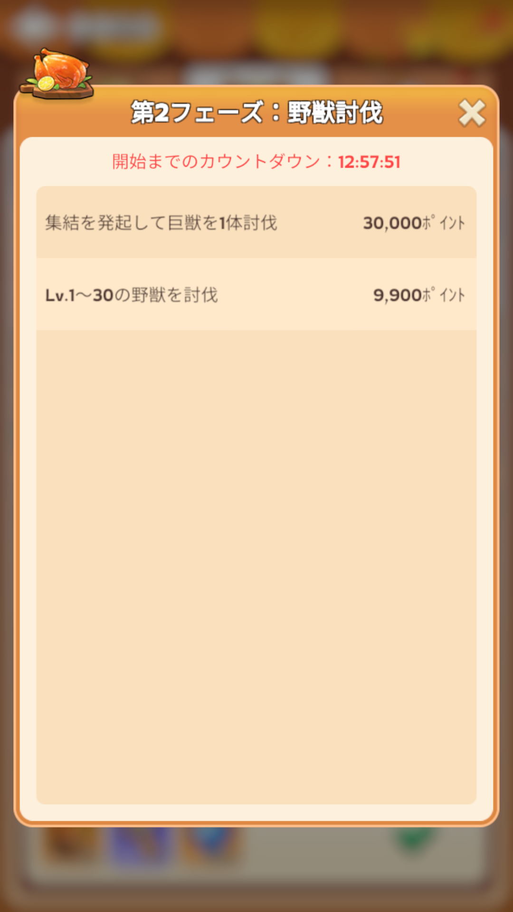
BS08 Day2| 獲得アクション | ポイント | 備考 |
|---|---|---|
| エピック募集 ×1 / 上級募集 ×1 | 11,000 / 3,300 pt | Day1と同値（残り半分の鍵を投入） |
| 欠片（レア / エピック / レジェンド） | 500 / 2,200 / 6,000 pt | Day1と同値 |
| 建造・研究・訓練／昇格・マスタースキル加速 1分 | 60 pt | 1時間 = 3,600 pt（ダイヤ加速対象外） |
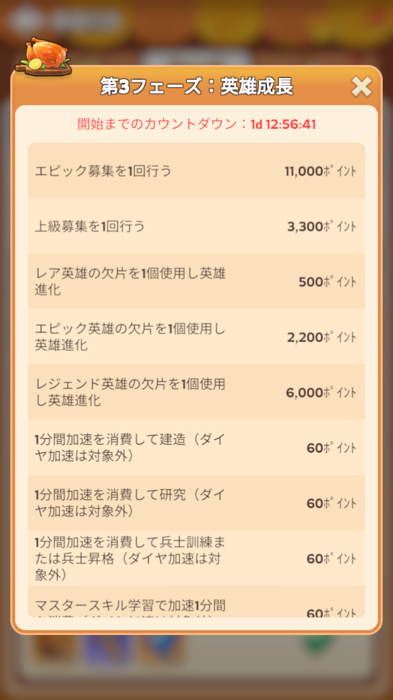
BS09 Day3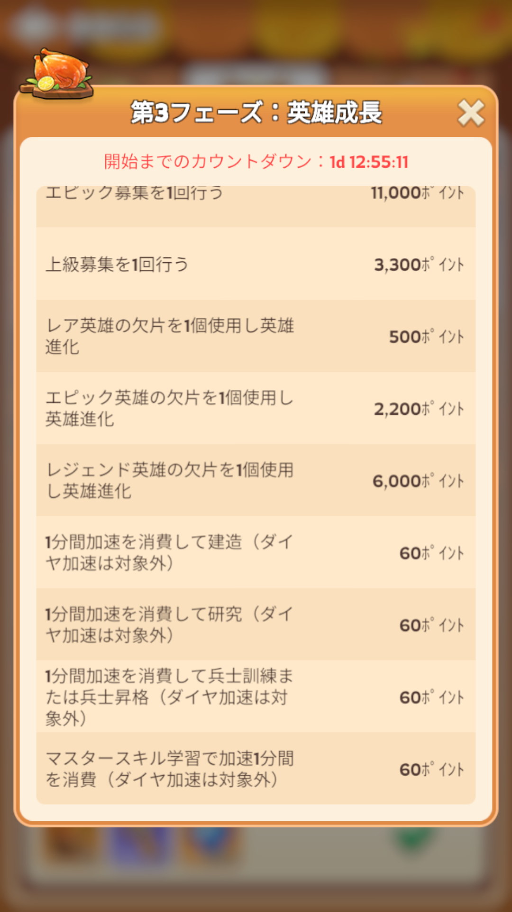
BS10 Day3加速| 兵士レベル（訓練1人あたり） | ポイント | 昇格ポイント（レベル差） |
|---|---|---|
| Lv.1 / Lv.2 / Lv.3 / Lv.4 | 5 / 7 / 10 / 16 pt | 昇格は「昇格後 − 昇格前」の差分 |
| Lv.5 / Lv.6 / Lv.7 / Lv.8 | 23 / 36 / 50 / 68 pt | 例：Lv.8 → Lv.9 = 22 pt |
| Lv.9 / Lv.10 / Lv.11 | 90 / 118 / 140 pt | Lv.9→10 = 28 pt / Lv.10→11 = 22 pt |
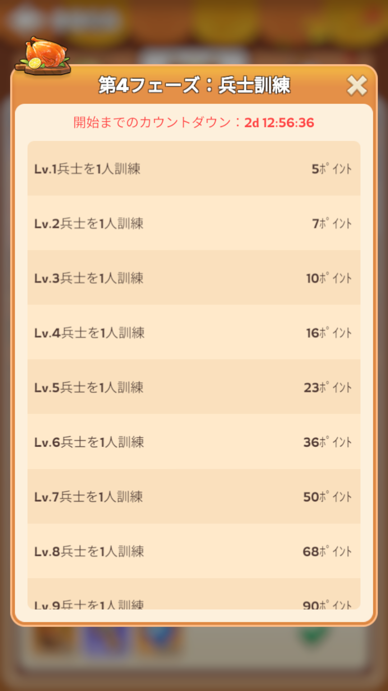
BS11 Day4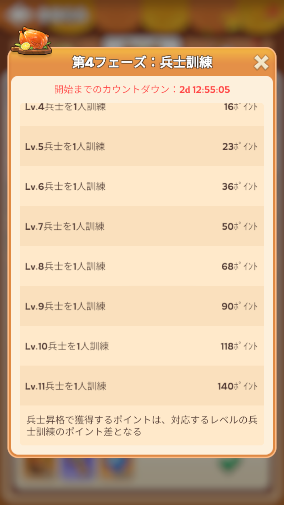
BS12 Day4高Lv| 獲得アクション | ポイント | 274,000pt達成の目安 |
|---|---|---|
| 鍛造ハンマー ×1 消費 | 25,000 pt | 11個で 275,000 pt（目標達成） |
| 専用装備対応パーツ ×1 消費 | 50,000 pt | 6個で 300,000 pt（目標達成） |
| ダイヤ ×1 消費 | 10 pt | 27,400ダイヤで 274,000 pt |
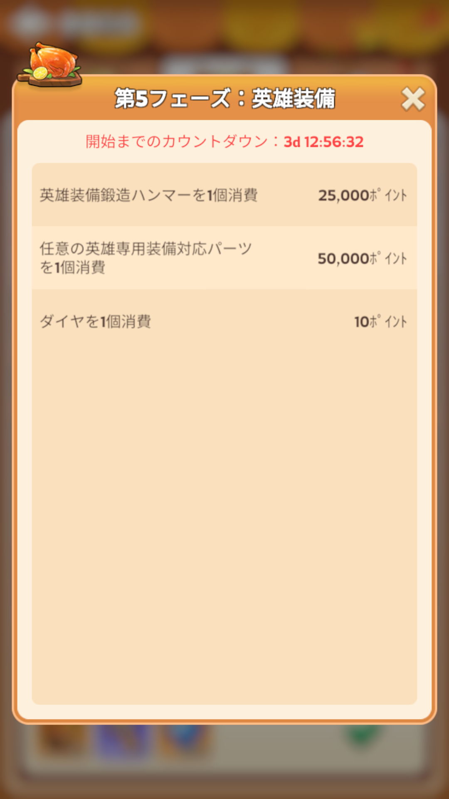
BS13 Day5| 獲得アクション | ポイント | 備考 |
|---|---|---|
| パン 1,000 / 木材 1,000 採集 | 各 10 pt | 前夜に高Lv資源タイルへ派遣し09:00以降に帰還 |
| 石材 200 / 鉄鉱 50 採集 | 各 10 pt | 採集バフ併用で一気に稼げる |
| 建造・研究・訓練／昇格で総力 +1 | 1 pt | 通常訓練の回収だけで最低ライン自然達成 |
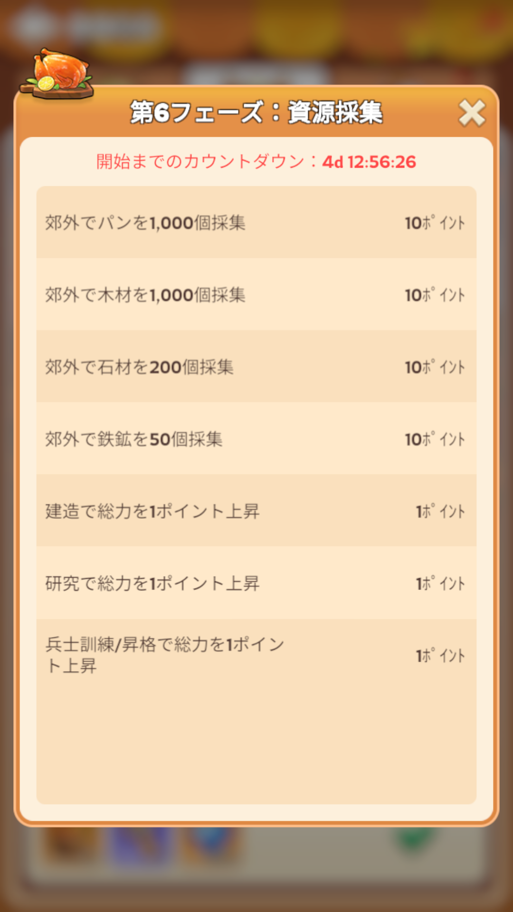
BS14 Day6| 獲得アクション | ポイント | 備考 |
|---|---|---|
| 領主装備評価スコア +1 | 50 pt | 強化1回で大きく伸びる |
| 建造・研究・訓練／昇格・マスタースキル加速 1分 | 60 pt | 1時間 = 3,600 pt（ダイヤ加速対象外） |
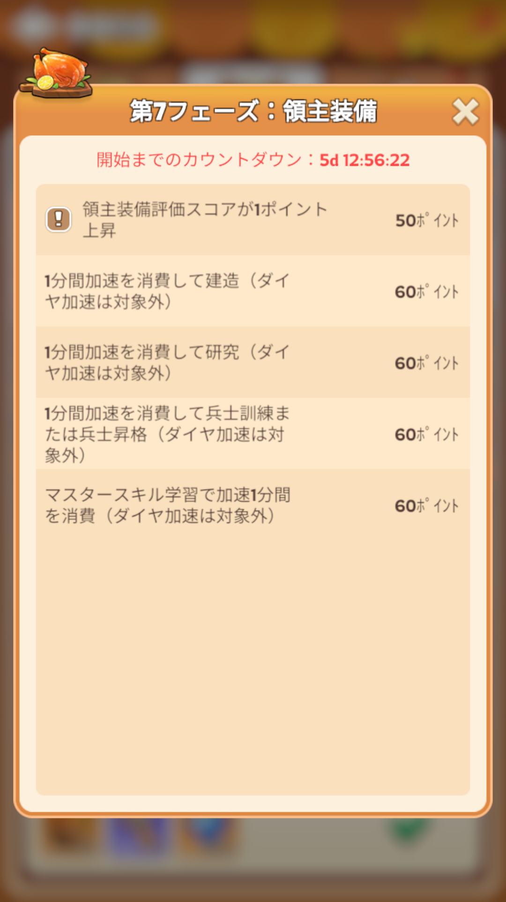
BS15 Day7目標報酬 ＆ ランキング報酬（日本語実機 正本）
| Day1 目標報酬（全5段階・実測） | |
|---|---|
| 必要ポイント段階 | 26,000 / 55,000 / 98,000 / 169,000 / 274,000 pt |
| 5段階 合計報酬 | 収穫物の袋 ×170、ダイヤ 2,000、黄金の鍵 ×1、スキルブック 等 |
| フェーズ順位（毎日・上位500名＆20,000pt以上） | 報酬内容 |
|---|---|
| 1位 | ダイヤ 14,000 ＋ 建造/研究/訓練 1h加速 各8 |
| 2位 | ダイヤ 8,500 ＋ 1h加速 各7 |
| 3位 | ダイヤ 5,000 ＋ 1h加速 各6 |
| 4〜10位 | ダイヤ 3,000 ＋ 1h加速 各5 |
| 総ランキング（終了後・上位500名） | 報酬内容 |
|---|---|
| 1位 | レジェンド汎用欠片 100 ＋ ダイヤ 40,000 ＋ 1h加速 各15 |
| 2位 | 汎用欠片 50 ＋ ダイヤ 24,000 ＋ 1h加速 各12 |
| 3位 | 汎用欠片 30 ＋ ダイヤ 14,400 ＋ 1h加速 各10 |
| 4〜10位 | 汎用欠片 20 ＋ ダイヤ 9,000 ＋ 1h加速 各8 |
| 11〜20位 | 汎用欠片 15 ＋ ダイヤ 5,000 ＋ 1h加速 各7 |
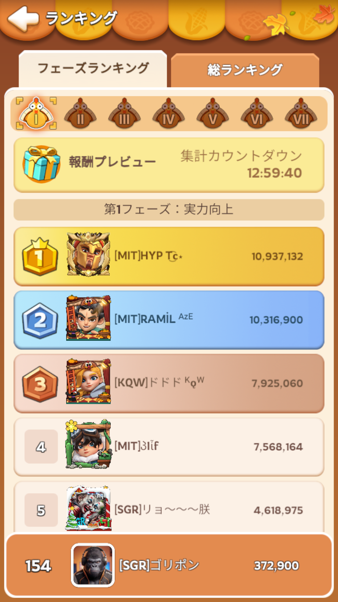
BS05 順位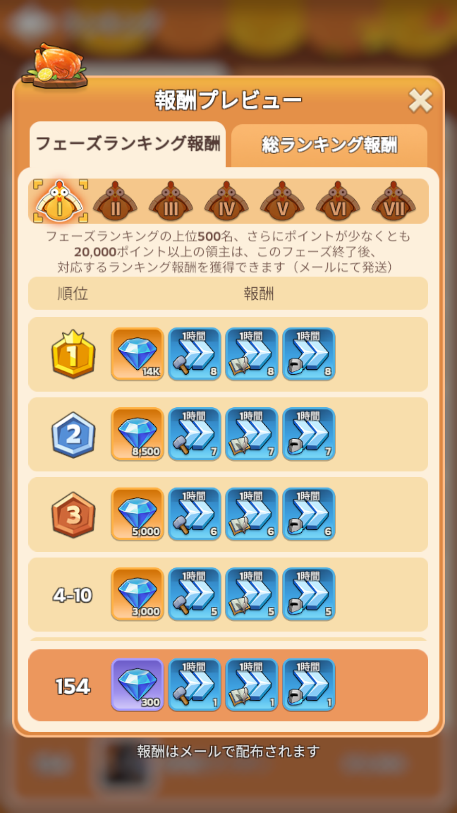
BS06 毎日順位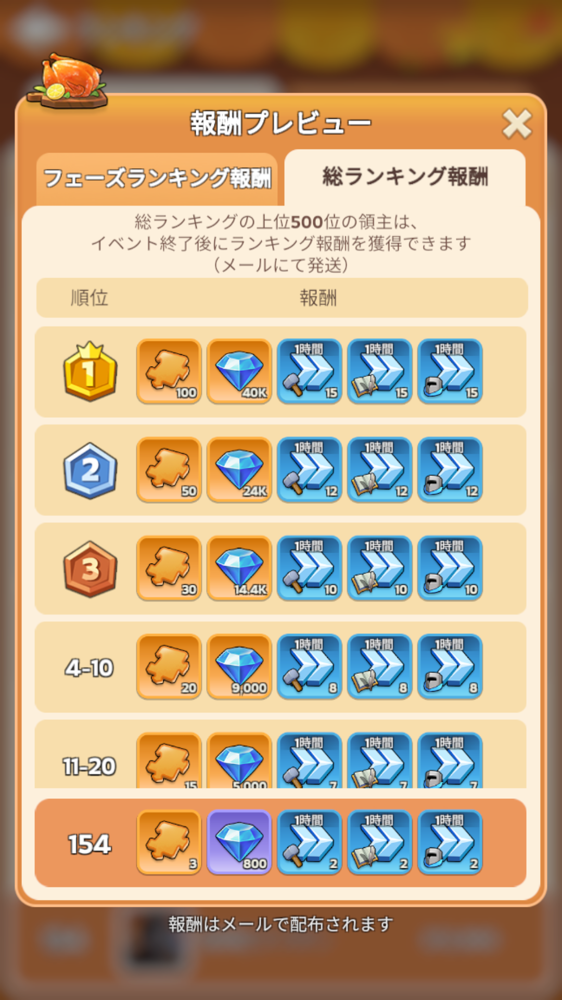
BS07 総順位KvK無傷7日間ルート ＆ 重複カレンダー戦略
豊穣の主は「チャーム・ペット・ミスリル・純金（Truegold）」が一切ポイントにならないため、無理に上位を狙うと直後に控えるKvK準備フェーズで完全に息切れします。以下の実践ロードマップならKvK資材をほぼ無傷で温存しつつ、毎日170袋の収穫物の袋と目標報酬を全回収できます。
| 日程 | フェーズ | KvK無傷ムーブ（やること） | 温存すべき資材 |
|---|---|---|---|
| 11/24 (Day1) | 実力向上 | 募集鍵の半分を使用＋日常建造/研究完了 | レジェンド欠片・大量加速 |
| 11/25 (Day2) | 野獣討伐 | 軽減英雄で野獣狩り（Supplies700袋と同時消化） | スタミナ缶の過剰消費 |
| 11/26 (Day3) | 英雄成長 | 募集鍵の残り半分を使用＋必要最小限の小口加速 | レジェンド欠片・汎用加速 |
| 11/27 (Day4) | 兵士訓練 | 前日仕込みの自然完了＋通常訓練 | 訓練加速（KvK訓練日へ） |
| 11/28 (Day5) | 英雄装備 | VIPショップ等の定期ダイヤ消費を集約＋必要分の鍛造ハンマー | 専用装備パーツの過剰消費 |
| 11/29 (Day6) | 資源採集 | 前夜採集帰還＋通常訓練回収（※Pumpkin Smash最終日） | 加速全般 |
| 11/30 (Day7) | 領主装備 | KvK準備Day1と重複するサーバーは加速ダブル取り（※要カレンダー確認） | ※Day7目標上限の鯖差に注意 |
料理イベント（豊穣大集結）＆ Supplies ＆ 無課金最強裏技
料理1品（食材4個）あたりの獲得ポイント
恒久都市スキン（125,000pt）到達に必要な食材数

③ 無課金最強裏技：「同盟食材リクエスト・シャッフル」で毎日+500pt
サブイベント終了日ズレ ＆ 12/1 豊穣の宴会（Harvest Festival）
豊穣祝典は全コンテンツが同じ日程ではありません。特にPumpkin Smash（かぼちゃ割り）の1日早期終了と、12/1の1時間限定宴会は見落としやすいため、以下のタイムラインカレンダーと一覧表を必ず確認してください。
| イベント名 | 11/24 (火) |
11/25 (水) |
11/26 (木) |
11/27 (金) |
11/28 (土) |
11/29 (日) |
11/30 (月) |
12/1 (火) |
|---|---|---|---|---|---|---|---|---|
| 豊穣の主（7フェーズ） | 終了 | |||||||
| 豊穣大集結（料理） | 終了 | |||||||
| 秋の楽章パズル | 終了 | |||||||
| Pumpkin Smash | 開始前 | 終了済 | 終了済 | |||||
| Lucky Cabin（幸運の小屋） | 開始前 | 終了 | ||||||
| 豊穣の宴会（Top10同盟） | 同盟ランキング集計期間（途中移籍は参加資格喪失） | |||||||
| イベント名 | 開催期間 | 重要仕様・注意点 |
|---|---|---|
| 豊穣の主 / 豊穣大集結（料理） | 11/24 〜 11/30 | 毎日09:00 JST切替。料理ボーナスはDay1〜6のみ。同盟忠誠ロックあり。 |
| 秋の楽章パズル（Autumn Anthem） | 11/24 〜 11/30 | 縦横ライン達成で宝箱、全制覇で豪華報酬。$5パック購入が全達成トリガー。 |
| Pumpkin Smash（かぼちゃ割り） | 11/25 〜 11/29 | メインより1日早く終了！ 矢・チャレンジの消化忘れ厳禁。 |
| Lucky Cabin（幸運の小屋） | 11/25 〜 11/30 | 願いの券で抽選＆ラッキーマーク交換所。最終日までに交換完了。 |
| 豊穣の宴会（Harvest Festival） | 12/1（1時間限定） | 同盟順位上位10同盟のみ開催（1位大宴会 / 2-3位中宴会 / 4-10位小宴会）。オンライン参加必須・途中移籍者は資格喪失。 |
課金パック評価比較 ＆ 永久都市スキン 125,000pt 計算
② 恒久都市スキン（125,000pt）の必要食材数と課金目安
| 項目 | 実測数値・計算根拠 |
|---|---|
| 恒久都市スキン 確定ライン | 125,000 pt（または個人ランキング上位10位） |
| ボーナス料理のみ（50pt/4食材） | 2,500品 ＝ 食材 約10,000個 |
| 通常料理のみ（40pt/4食材） | 3,125品 ＝ 食材 約12,500個（2,500個も損！） |
| 課金総額の目安 | 約 $300 〜 $500（無料回収分・Supplies・同盟シャッフル併用前提） |
③ 高額パック評価の視点比較（プレイスタイル別）
慎重派（無課金・微課金目線）
- 永久都市スキン確定（125,000pt）は完全な重課金（ホエール）向け。中途半端に数万円入れてもスキンには届かず、達成感が薄くなりやすい。
- 純粋な育成効率だけで見れば他の大型イベントに譲る側面もあるため、無理な追い課金は避けるのが無難。
- 買うならパズル全達成トリガーになる$5パック1点買いで止めるのが最も堅実で高コスパ。
積極派（純金・チャーム育成重視・中課金以上目線）
- 段階パックに含まれるカスタム選択箱（Harvest Custom Chest）で、最優先素材の純金（Truegold）やチャーム設計図・ガイドをピンポイント補強できる点が優秀。
- 料理提出で大量に開く300ptごとの宝箱からダイヤ還元が返ってくるため、実質コストは見た目より軽い。
- 永久都市スキンを狙う層や、純金・チャームを一気に伸ばしたい中〜重課金層には十分検討価値のある良イベント。
日本語実画面クイック一覧（全15枚）
本攻略ガイドの正本データ根拠となっている日本語実機スクリーンショット全15枚を一覧で素早く確認できます。カテゴリで絞り込み、任意のカードをクリックすると高解像度ライトボックスで拡大・前後送り閲覧が可能です。